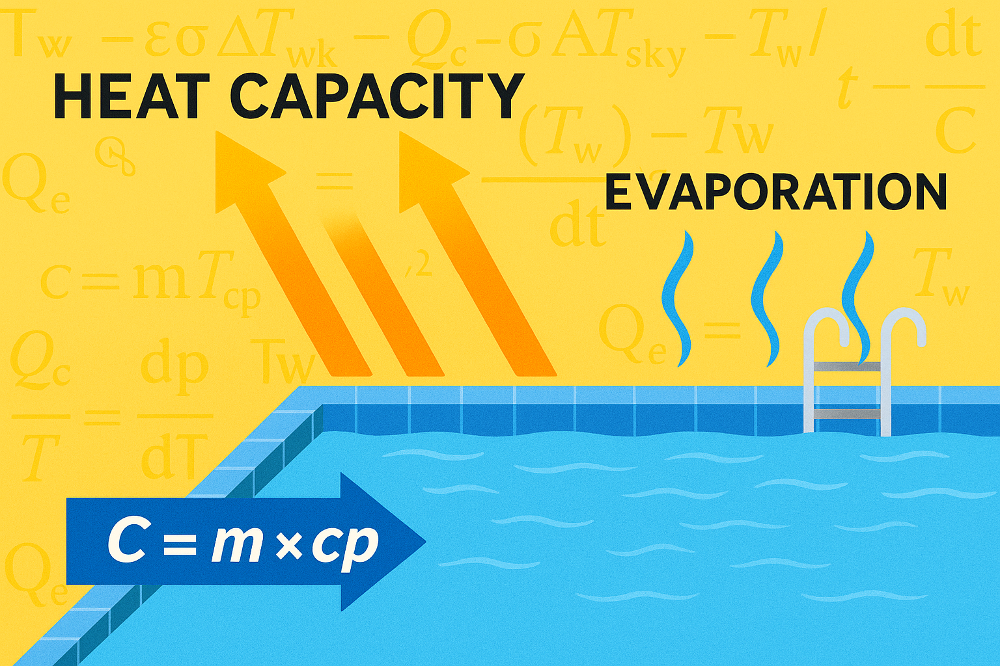
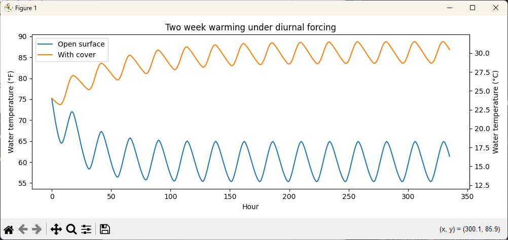

Modeling Heat Capacity and Evaporation with Python: Why Water Warms Slowly but Cools Fast

Every summer, it feels like a small miracle when the pool finally warms up enough to swim. In Nevada, where the air temperature can sit above 100°F (38°C) for weeks, you’d expect the water to keep pace. Yet, somehow, it takes forever to warm, and only a few cool nights can undo all that progress.
The same phenomenon shows up in a stick of butter. Butter melts quickly, while margarine stays stubbornly firm even under the same heat. That’s not coincidence; it’s thermodynamics.
The butter versus margarine comparison is a staple example in nutrition science. It shows how the proportions of fat, water, and solids affect how much energy it takes to change temperature. Butter, with more fat and less water, heats up and melts quickly. Margarine, full of water and unsaturated oils, absorbs more energy before softening because water’s specific heat is much higher.
“A pool in the desert and a stick of margarine in the kitchen both tell the same story: water resists change.”
A swimming pool works the same way, just scaled up thousands of times. Its massive water content means it has enormous heat capacity where warming takes a long time because every degree requires tremendous energy. Cooling happens faster, though, because evaporation and night radiation pull energy out far more efficiently than the sun can replace it.
In this post, we will turn that intuition into a simple Python model that explains exactly why water warms so slowly but cools so fast.
The Thought Experiment
Imagine a shallow pool sitting in the desert sun. During the day, it absorbs energy from sunlight, and at night it loses energy to the air and sky. The surprising part is not that both happen, but that the rates are so uneven.
The pool’s heat capacity acts like a huge thermal battery; it takes time to charge. The cooling process, on the other hand, is driven by evaporation. Each gram of water that evaporates carries away about 2.45 kilojoules of energy, and with enough dry air and a light breeze, those losses pile up quickly.
The same logic explains why a pat of margarine melts more slowly than butter. Water is a powerful heat sink, and evaporation is a powerful energy thief. Put them together, and you have a recipe for long warmups and quick cooldowns.
Modeling the Problem
We will treat the water as a well mixed control volume with a single temperature. The surface exchanges heat with the air through convection, with the sky through longwave radiation, and with the sun through shortwave absorption. Evaporation removes energy proportional to the rate at which vapor escapes.
Assumptions:
- The water is well mixed with no stratification. This means that the water’s temperature is assumed to be uniform throughout, rather than layered (or stratified). In real life, large bodies of water often stratify, meaning warmer, lighter water floats on top while cooler, denser water sinks.
- Conduction through walls and floor is small compared with surface fluxes. In other words, most heat exchange happens through the surface where the water meets the air, not through the pool’s sides or bottom. This fact allows us to ignore the smaller conductive losses into the ground or walls.
- Shortwave absorption is a constant fraction of incident irradiance. The sunlight that hits the surface is partly reflected and partly absorbed. Here, we assume that a fixed portion (often 85–90%) is absorbed as heat, rather than modeling how absorption varies with sun angle or surface color.
- Longwave exchange follows the Stefan–Boltzmann law with an effective sky temperature. The pool radiates heat upward to the sky, and the sky radiates a smaller amount back. We model this as a simple radiation balance using the Stefan–Boltzmann law, where the “sky temperature” represents the average radiative temperature of the atmosphere above.
- Evaporation follows a bulk aerodynamic relationship that depends on humidity gradient and wind. The rate of evaporation depends on how dry the air is and how quickly air moves over the surface. Wind helps carry away moist air, increasing evaporation, while higher humidity slows it down.
- Weather varies smoothly over the day and repeats during the simulation window. Instead of using random or hourly data, we assume repeating daily cycles for temperature, humidity, sunlight, and wind. This simplifies the simulation while still capturing the main diurnal pattern of heating and cooling.
The energy balance is defined as follows using the standard form of the surface energy balance used throughout thermodynamics, climatology, and environmental engineering. In academic terms, this is the first-law (conservation of energy) equation for a control volume, applied to a water surface.
\[ C \frac{dT}{dt} = Q_{\text{solar}} + Q_{\text{convective}} + Q_{\text{radiative}} + Q_{\text{evaporative}} \]
where:
\[ C = m c_p \]
\[ Q_{\text{solar}} = \alpha A I(t) \]
\[ Q_{\text{convective}} = h_c A [T_{\text{air}}(t) - T(t)] \]
\[ Q_{\text{radiative}} = \varepsilon \sigma A [T_{\text{sky}}(t)^4 - T(t)^4] \]
\[ Q_{\text{evaporative}} = -L_v \dot{m}_{\text{evap}} \]
Using AI to Scaffold the Code
We’ll begin by using AI to generate the helper functions and constants needed to support our simulation.
Prompt example: When you ask an AI assistant to provide scaffolding, be specific about inputs, outputs, and units. Request pure functions for each physical term, expressed in SI units, and constants defined once. Ask for no plotting and no input or output inside the helpers so that you can test them easily.
Write a single Python module that defines helper functions for a simple water-surface energy balance, and include only valid Python code in the output.
Requirements:
Import NumPy as
np.Define these constants (SI units):
SIGMA = 5.670374419e-8# Stefan–Boltzmann W·m^-2·K^-4LV = 2.45e6# latent heat of vaporization J·kg^-1CP = 4186.0# specific heat of water J·kg^-1·K^-1RHO = 1000.0# density of water kg·m^-3Define temperature conversion helpers:
c_to_f(c)returns Fahrenheit from Celsiusf_to_c(f)returns Celsius from Fahrenheitc_to_k(C)returns Kelvin from CelsiusDefine saturation vapor pressure over water (Pa) as a function of Celsius using Magnus:
esat(C) = 610.94 * exp(17.625*C / (C + 243.04))Define an evaporation mass flux helper (kg·s^-1) using a bulk aerodynamic form:
evap_flux(TwC, TairC, RH, wind, A, k_evap=2.5e-7, beta_wind=0.1)whereRHis fractional 0..1,windis m·s^-1,Ais m^2.- Compute
es = esat(TwC),ea = RH * esat(TairC),grad = max(es - ea, 0), and returnk_evap * A * grad * (1.0 + beta_wind * wind).Define heat flux terms that return Watts (W):
q_solar(I, A, alpha)returnsalpha * A * IwhereIis W·m^-2q_conv(TwK, TairK, A, h_c)returnsh_c * A * (TairK - TwK)q_rad(TwK, TskyK, A, epsilon)returnsepsilon * SIGMA * A * (TskyK**4 - TwK**4)q_evap(TwC, TairC, RH, wind, A, k_evap=2.5e-7, beta_wind=0.1)computesmdot = evap_flux(...)and returns-LV * mdotDefine a diurnal helper
diurnal(base, amp, hours, peak_shift=7.0)that returnsbase + amp * sin(2*pi*(hours - peak_shift)/24.0).Do not include any print statements, main guards, or plotting.
Output only the code with the exact function names and signatures specified.
Python code: Your LLM should respond with code similar to the following:
|
|
Simulation: Diurnal Heating and Night Cooling
Prompt example: Now we tell AI to generate a fairly tractable function to simulate the diurnal heating and cooling of a body of water over a specified number of days. Note how specific I have to be in order to get the code I need.
Write a single Python function
simulate(days=14, dt=3600.0, cover=False, seed_temp_C=24.0)that performs a forward Euler simulation of a well mixed water body under diurnal forcing. Output only valid Python code.Requirements:
The function must include a NumPy import as
npat top scope.Use these already defined helpers and constants, do not redefine them:
- helpers:
diurnal(base, amp, hours, peak_shift),c_to_k(C),q_solar(I, A, alpha),q_conv(TwK, TairK, A, h_c),q_rad(TwK, TskyK, A, epsilon),q_evap(TwC, TairC, RH, wind, A, k_evap, beta_wind)- constants:
RHOandCPGeometry and bulk properties inside the function:
L, W, depth = 8.0, 4.0, 1.4A = L * WV = A * depthm = RHO * VC = m * CPSurface exchange coefficients and optical properties:
alpha = 0.85epsilon = 0.95h_c = 8.0k_evap = 2.5e-7beta_wind = 0.1- If
coveris True, setk_evap = 0.3e-7,epsilon = 0.75,h_c = 6.0Time discretization:
N = int(days * 24)t = np.arange(N) * dthours = (t / 3600.0) % 24Synthetic diurnal forcing:
T_air_C = diurnal(37.0, 10.0, hours)RH = np.clip(diurnal(0.18, 0.10, hours), 0.05, 0.6)wind = np.clip(diurnal(2.0, 1.5, hours), 0.2, 6.0)I = np.maximum(0.0, 900.0 * np.sin(np.pi * (hours - 6.0) / 12.0))T_sky_K = c_to_k(T_air_C - 15.0)State initialization:
Tw = np.zeros(N)Tw[0] = seed_temp_CTime stepping loop for
ifrom 1 toN-1:
TwK = c_to_k(Tw[i-1])- Compute fluxes (Watts):
Qs = q_solar(I[i-1], A, alpha)Qc = q_conv(TwK, c_to_k(T_air_C[i-1]), A, h_c)Qr = q_rad(TwK, T_sky_K[i-1], A, epsilon)Qe = q_evap(Tw[i-1], T_air_C[i-1], RH[i-1], wind[i-1], A, k_evap, beta_wind)Qnet = Qs + Qc + Qr + QeTw[i] = Tw[i-1] + (Qnet * dt) / CReturn a tuple
(t / 3600.0, Tw)where time is in hours and temperature in Celsius.After the function, include a main guard that runs a 14 day open and covered simulation, prints the number of simulated hours, and prints the final temperatures with one decimal place labeled in Celsius.
Generously comment the code, but do not exceed 80 chars on any line.
Python code: Below is thesimulate function and a compact main with a simple run that compares open water with a covered surface.
|
|
Sample Output: The following simulation shows a ~25 °F (~14 °C) difference between a covered body of water and an uncovered one.
|
|
Making the Results Visual

Prompt example: A picture makes the mechanism obvious. Here I ask AI to generate the Python code to plot the two temperature curves on the same axes to compare warming with and without a cover.
Write a Python function named plot_runs_dual_axis(run_open, run_cov) that uses Matplotlib to plot two temperature time series with Fahrenheit on the left (primary) y-axis and Celsius on the right (secondary) y-axis.
Requirements:
Assume these helpers already exist in scope and must be used:
c_to_f(array_like)andf_to_c(array_like).Inputs are tuples:
run_open = (hours_open, Tw_open_C, label_open)run_cov = (hours_cov, Tw_cov_C, label_cov)wherehours_*are hour vectors, andTw_*_Care water temperatures in Celsius.Convert the Celsius series to Fahrenheit for plotting on the primary axis.
Create the plot with
fig, ax = plt.subplots(figsize=(10, 4)).Plot both runs with labels, set x-label to
"Hour", primary y-label to"Water temperature (°F)", title to"Two week warming under diurnal forcing", and show a legend.Add a secondary y-axis on the right in Celsius using
ax.secondary_yaxis('right', functions=(f_to_c, c_to_f))and set its label to"Water temperature (°C)".Call
fig.tight_layout()andplt.show()at the end.Include a short docstring explaining inputs and the dual-axis behavior.
Return only valid Python code with the single function definition and necessary
import matplotlib.pyplot as plt.
Python code: Here is a minimal plotting script for the temperature trajectories.
|
|
What We Learned
Water behaves like a massive thermal reservoir. High specific heat spreads warming across many days. Evaporation and longwave radiation remove energy efficiently at night, especially in dry air. A simple cover changes the balance by cutting evaporation and reducing radiative loss, which keeps more of the daytime energy in the water.
Exercises for the Reader
Beginner Level: Quick Fixes and Calibration
-
Calibrate the evaporation coefficient so the model matches a week of measured temperatures from your own setup.
-
Change depth while holding surface area fixed and observe how geometry changes heating and cooling time scales.
-
Replace the synthetic solar curve with measured irradiance from a local weather source.
Intermediate Level: Weather and Geometry
-
Add a thin surface layer on top of the bulk water and give it its own temperature for faster daytime response.
-
Drive the model with hourly air temperature, humidity, and wind from a nearby station and compare seasons.
-
Add an approximate ground heat flux term using a constant heat transfer coefficient and soil temperature.
Advanced Level: Stochasticity and Control
-
Add random gusts in wind and random humidity excursions at night and examine the spread of outcomes.
-
Implement a simple controller that applies a cover based on forecasted night conditions and a target minimum temperature.
-
Couple the model to a small heat pump with a coefficient of performance and schedule it when losses are smallest.
Closing Thoughts
Butter and pools may seem like strange lab partners, until you turn up the heat. In butter, fat gives way quickly, while the water in margarine plays the long game. Pools behave like margarine on a grand scale, warming slowly, then giving it all back after just a few dry nights. Next time you’re poolside on a broiling summer day, you’ll know exactly why the water can feel like early spring.